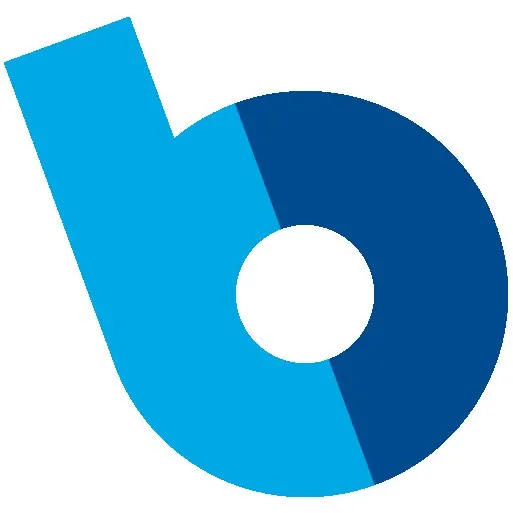
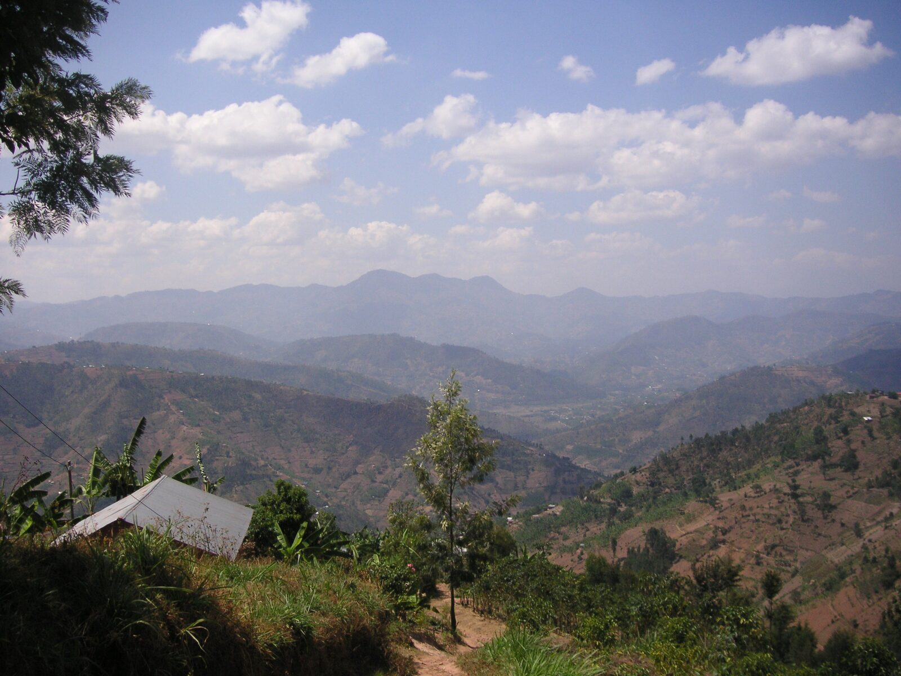
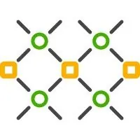
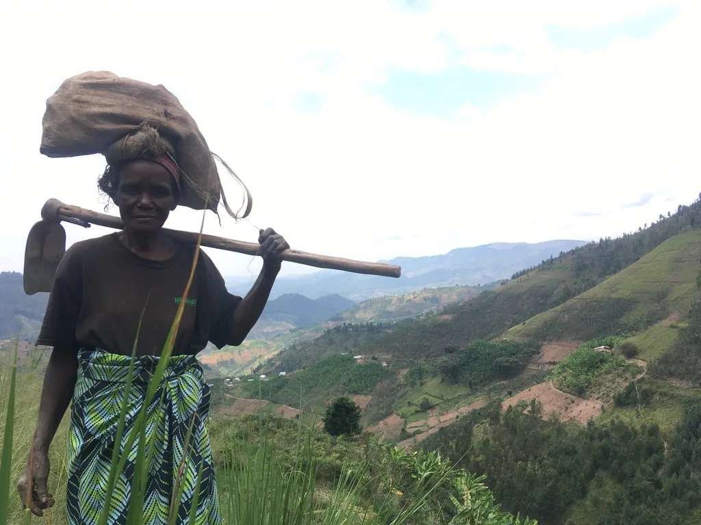
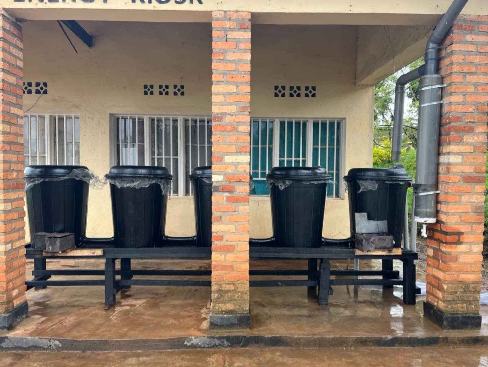
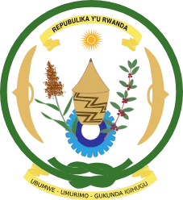
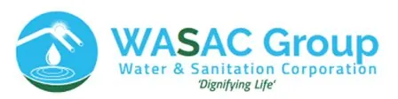

Bboxx
Our 2010 project in Rwanda helped launch Bboxx. It now delivers clean energy to over 25% of the country.

Who we are
We give rural communities the tools to uplift themselves, through sustainable, scalable, long-term engineering.
e.quinox is a student society at Imperial College London, working with the University of Rwanda and Rwandan communities since 2009.
We design at Imperial, build and test on the ground with the communities who will use what we make, then hand it over to Rwandan partners who run it long after our teams fly home.
We don’t just design. We build locally led systems that last, and some of them have grown into companies.
2009
working with Rwandan communities since
6
Rwandan villages electrified
2,500+
households reached
3
companies spun out
What grew from it
Student projects that became operating businesses, still delivering energy and services in Rwanda today.

Our 2010 project in Rwanda helped launch Bboxx. It now delivers clean energy to over 25% of the country.

Solar mini-grids bringing affordable power to rural Rwandan homes and businesses.
Inclusion strategy and field research for development projects.
2026 · Project Amazi
We’re returning. Not with energy, but with water.
On visits in 2022 and 2024 we met more than 100 families and local leaders in Gakenke District, in Rwanda’s northern hills. Their message was clear: we need a local, reliable water source.
Meet Project AmaziThe problem
Families in Gakenke walk for water every day, and still get only a fraction of what they need.

Time
1.5+hours
a day spent walking to collect water.
Quantity
3 to 20L
per person per day in Minazi Sector. Intermediate access, the level that supports good hygiene, is 50 L.
Health & work
4weeks
of work lost per adult each year to hygiene-related illness. Girls miss school to fetch water.
The economy
~2.4%
of Rwanda’s GDP is lost every year to water stress.
Sources: e.quinox community surveys, Gakenke 2022 to 2025; e.quinox 2026 partnership brief.

Our answer
Project Amazi is a modular household rainwater harvester: light enough to carry up a hillside, simple enough to install with minimal tools, and built from parts sold in Rwanda.
3.2×
cheaper to install than a pumped communal tap connection
3.8×
cheaper to run, month after month
9months
over 40% of household water needs met from rain, in every province, at 50 L per person
Who we work with


Water quality is tested in the University of Rwanda’s chemistry labs, WASAC Gakenke shared the cost data behind our economics, and our 2026 business case grew out of talks with MININFRA. The full partnership
Get involved
The first system is in. The next step is a pilot across more households, and that takes partners.
Partners & funders
Sponsors, NGOs, research groups and funding bodies: help take Amazi from one system to many.
Get in touchSupport a household
680,000 RWF covers the tanks, guttering, fittings, foundation and delivery for one household’s 700 L system.
DonateImperial students
Engineers, researchers and organisers from any department. The committee recruits every year.
How we work